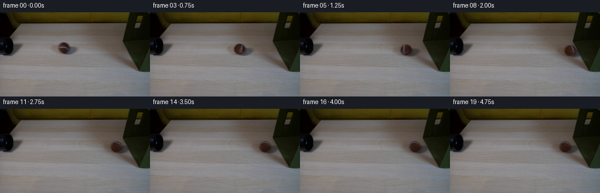
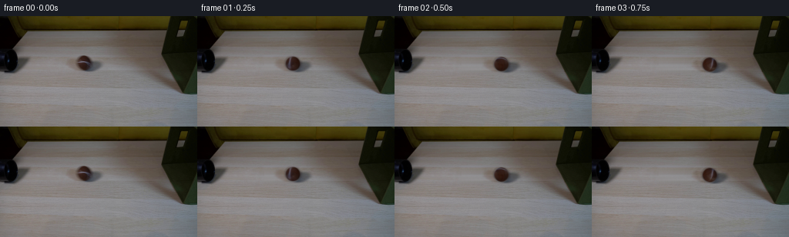

CODING AGENTS AS PIXEL WORLD MODELS
traex/GPT-6.1-Sol · 0152
点击播放 · 原生 RGB 像素
逐轮保存的候选
回放视频、检查图与代码变化。
每份候选均可单独播放。实际图片检查记录在下方工具轨迹中。
候选 01播放与检查图
点击播放 · 原生 RGB 像素
展开代码变化
--- 上一保存版本
+++ 本次保存版本
@@ -0,0 +1,181 @@
+from pathlib import Path
+import numpy as np
+from PIL import Image
+from scipy.ndimage import gaussian_filter, map_coordinates
+from scipy.optimize import least_squares
+import artifact_io
+
+ROOT = Path(__file__).resolve().parent
+H, W = 144, 256
+source = np.asarray(Image.open(ROOT / 'first_frame.png').convert('RGB'), dtype=np.float64)
+Y, X = np.mgrid[:H, :W]
+CX, CY, R = 108.8, 60.8, 9.25
+
+# Reconstruct the wooden surface using the adjacent, uninterrupted grain on
+# either side of the moving object. Everything outside this small footprint
+# stays exactly as photographed.
+background = source.copy()
+left, right = np.arange(61, 85), np.arange(138, 163)
+fit_x = np.r_[left, right]
+fill_x = np.arange(82, 140)
+for y in range(49, 76):
+ for c in range(3):
+ coeff = np.polyfit((fit_x - 110) / 50, source[y, fit_x, c], 2)
+ estimate = np.polyval(coeff, (fill_x - 110) / 50)
+ # Keep the very fine, local photographic grain, with a deterministic
+ # offset so there is no frame-to-frame texture noise.
+ grain = source[y, fill_x - 34, c] - gaussian_filter(source[y, :, c], 2)[fill_x - 34]
+ estimate += 0.55 * grain
+ feather_x = np.minimum(np.clip((fill_x - 82) / 5, 0, 1), np.clip((139 - fill_x) / 5, 0, 1))
+ feather_y = min(np.clip((y - 49) / 2, 0, 1), np.clip((75 - y) / 2, 0, 1))
+ blend = feather_x * feather_y
+ background[y, fill_x, c] = source[y, fill_x, c] * (1-blend) + estimate * blend
+
+# Separate the photographed soft cast shadow from the ball. The shadow's
+# unobserved central part is fitted analytically from its visible perimeter.
+dx, dy = X - CX, Y - CY
+rad = np.sqrt((dx / R)**2 + (dy / (R * 1.025))**2)
+region = (X >= 84) & (X <= 136) & (Y >= 51) & (Y <= 73)
+ratio = np.clip(source / np.maximum(background, 1), .10, 1.035)
+lum_ratio = np.clip(source.mean(2) / background.mean(2), .08, 1)
+fit_mask = region & (rad > 1.20)
+fx, fy = X[fit_mask], Y[fit_mask]
+target = -np.log(lum_ratio[fit_mask])
+
+def shadow_density(x, y, p):
+ a, cx, cy, sx, sy, shear = p
+ u = (x - cx - shear * (y-cy)) / sx
+ v = (y - cy) / sy
+ return a * np.exp(-.5*(u*u+v*v))
+
+initial = [.65, 118., 65., 12., 4.6, -.25]
+result = least_squares(lambda p: shadow_density(fx,fy,p) - target, initial,
+ bounds=([.05,110,59,5,2,-2],[1.5,127,69,22,9,2]),
+ loss='soft_l1', f_scale=.08)
+analytic_ratio = np.exp(-shadow_density(X, Y, result.x))
+# Small channel-dependent illumination makes the occluded shadow agree with
+# the blue-gray tones in the photograph.
+model = analytic_ratio[:,:,None] ** np.array([1.015, 1.0, .95])[None,None,:]
+outside_weight = np.clip((rad - .96)/.23,0,1)
+shadow_ratio = model * (1-outside_weight[:,:,None]) + ratio * outside_weight[:,:,None]
+shadow_ratio = np.clip(shadow_ratio, .15, 1)
+shadow_ratio[~region] = 1
+# Keep the original cutoff in the table's photographed texture.
+shadow_ratio[73] = .35*shadow_ratio[73] + .65
+shadow_ratio = gaussian_filter(shadow_ratio, (.35,.35,0))
+shadow_background = background * shadow_ratio
+
+# Extract a continuous, image-derived spherical texture, including the
+# characteristic pale curved tennis seam. No external textures are used.
+alpha = np.clip((1.045-rad)/.17,0,1)
+minimum = np.array([25.,14.,10.])
+required = np.max((shadow_background-source) / np.maximum(shadow_background-minimum,1),2)
+alpha = np.maximum(alpha, np.clip(required,0,1)*np.clip((1.21-rad)/.14,0,1))
+alpha *= np.clip((72-Y)/1.5,0,1)
+alpha *= region
+fg = (source - (1-alpha[:,:,None])*shadow_background) / np.maximum(alpha[:,:,None], .02)
+fg = np.clip(fg, [25,14,10], [144,144,148])
+
+nx, ny = dx/R, dy/R
+nz = np.sqrt(np.maximum(0,1-nx*nx-ny*ny))
+def lighting(x,y,z):
+ return np.clip(.70+.23*z-.16*x-.08*y,.43,1.08)
+light = lighting(nx,ny,nz)
+albedo = fg / light[:,:,None]
+fallback = np.zeros_like(source) + [60.5,35.,28.]
+# Limit extrapolation at the silhouette, where de-matting is ill-conditioned.
+confidence = np.clip((alpha-.20)/.65,0,1)
+albedo = albedo*confidence[:,:,None] + fallback*(1-confidence[:,:,None])
+albedo = gaussian_filter(albedo, (.24,.24,0))
+
+# The path is straight on the table, preserving its slight perspective slope.
+# A low-restitution collision is followed by a frictional rolling recoil.
+TC = 1.75
+V0, DECEL = 60., 4.
+XC = CX + V0*TC - .5*DECEL*TC*TC
+VC = V0 - DECEL*TC
+RESTITUTION, ROLL_DRAG = .24, 7.
+RECOIL = VC*RESTITUTION
+STOP_TIME = RECOIL/ROLL_DRAG
+
+def position(t):
+ if t <= TC:
+ x = CX + V0*max(t,0) - .5*DECEL*max(t,0)**2
+ else:
+ u = min(t-TC, STOP_TIME)
+ x = XC-RECOIL*u+.5*ROLL_DRAG*u*u
+ return x, CY+.045*(x-CX)
+
+axis = np.array([0., -.55, .8351646544])
+axis /= np.linalg.norm(axis)
+
+def draw_sample(t):
+ cx,cy = position(t)
+ dt = t-TC
+ # The fabric face absorbs the impact and relaxes without the rigid box
+ # changing location. Warp only its immediate contact area.
+ indentation = 1.12*np.exp(-(dt/.105)**2)
+ if dt>0:
+ indentation += .18*np.exp(-dt*9)*np.sin(dt*25)
+ if abs(indentation) > .002:
+ contact_y = cy-4.4
+ displacement = indentation*np.exp(-.5*((Y-contact_y)/11.)**2)
+ displacement *= np.clip((X-198)/16,0,1)*np.exp(-np.maximum(X-224,0)/20.)
+ base = np.stack([map_coordinates(background[:,:,c], [Y, X-displacement], order=1, mode='nearest') for c in range(3)],2)
+ else:
+ base = background.copy()
+
+ # Translate the measured shadow as a multiplicative change in illumination,
+ # leaving the destination's wooden grain visible through it.
+ coords = [Y-(cy-CY), X-(cx-CX)]
+ moved_shadow = np.stack([map_coordinates(shadow_ratio[:,:,c],coords,order=1,mode='constant',cval=1) for c in range(3)],2)
+ # Shadow lies on the wood, not on the vertical fabric wall.
+ edge = 182.0+.555*Y
+ wood = np.clip((edge-X)/1.4,0,1)
+ base *= 1 + (moved_shadow-1)*wood[:,:,None]
+
+ # Render just a small supersampled footprint. Spherical rotation changes
+ # the seam and fine felt texture while illumination remains fixed.
+ s=4
+ xa=max(0,int(np.floor(cx-R-3))); xb=min(W,int(np.ceil(cx+R+3)))
+ ya=max(0,int(np.floor(cy-R-3))); yb=min(H,int(np.ceil(cy+R+3)))
+ ys = ya+(np.arange((yb-ya)*s)+.5)/s-.5
+ xs = xa+(np.arange((xb-xa)*s)+.5)/s-.5
+ xx,yy=np.meshgrid(xs,ys)
+ compression = .055*np.exp(-((t-TC)/.085)**2)
+ qx=(xx-cx)/(R*(1-compression))
+ qy=(yy-cy)/(R*(1+.38*compression))
+ qrad=np.sqrt(qx*qx+qy*qy)
+ qz=np.sqrt(np.maximum(0,1-qrad*qrad))
+ normals=np.stack([qx,qy,qz],-1)
+ theta=(cx-CX)/R
+ # Inverse Rodrigues rotation maps visible points back to the original felt.
+ co,si=np.cos(-theta),np.sin(-theta)
+ dot=np.sum(normals*axis,-1,keepdims=True)
+ rot=normals*co+np.cross(axis,normals)*si+dot*axis*(1-co)
+ tx=CX+R*rot[:,:,0]
+ ty=CY+R*rot[:,:,1]
+ texture=np.stack([map_coordinates(albedo[:,:,c],[ty,tx],order=1,mode='nearest') for c in range(3)],2)
+ # Repeated front/back hemispheres close continuously at the silhouette.
+ color=texture*lighting(qx,qy,qz)[:,:,None]
+ aa=np.clip((1.065-qrad)/.13,0,1)
+ # Respect foreground occlusion by the box's oblique leading face.
+ box_edge=182.0+.555*yy + indentation*np.exp(-.5*((yy-(cy-4.4))/11.)**2)
+ aa*=np.clip((box_edge-xx+.35)/.7,0,1)
+ # Average premultiplied color for a soft photographic silhouette.
+ premult=(color*aa[:,:,None]).reshape(yb-ya,s,xb-xa,s,3).mean((1,3))
+ coverage=aa.reshape(yb-ya,s,xb-xa,s).mean((1,3))
+ base[ya:yb,xa:xb] = base[ya:yb,xa:xb]*(1-coverage[:,:,None])+premult
+ return base
+
+frames=[source.astype(np.uint8)]
+for i in range(1,20):
+ t=i/4
+ # A constant short exposure gives restrained, velocity-dependent blur.
+ samples=[draw_sample(t+q) for q in np.linspace(-1/90,1/90,5)]
+ frames.append(np.clip(np.mean(samples,0),0,255).round().astype(np.uint8))
+frames=np.stack(frames)
+np.save(ROOT/'.tmp'/'background.npy', background.astype(np.uint8))
+Image.fromarray(background.clip(0,255).astype(np.uint8)).save(ROOT/'.tmp'/'reconstructed_table.png')
+artifact_io.save(frames,ROOT)
+print('Saved', frames.shape, frames.dtype, 'first-frame exact:',np.array_equal(frames[0],source.astype(np.uint8)))
候选 02播放与检查图
点击播放 · 原生 RGB 像素


展开代码变化
--- 上一保存版本
+++ 本次保存版本
@@ -117,6 +117,9 @@
indentation = 1.12*np.exp(-(dt/.105)**2)
if dt>0:
indentation += .18*np.exp(-dt*9)*np.sin(dt*25)
+ # The ball follows the deflecting face during the brief compression,
+ # so contact remains closed rather than opening an artificial gap.
+ cx += .82*max(indentation, 0)
if abs(indentation) > .002:
contact_y = cy-4.4
displacement = indentation*np.exp(-.5*((Y-contact_y)/11.)**2)
@@ -168,14 +171,19 @@
base[ya:yb,xa:xb] = base[ya:yb,xa:xb]*(1-coverage[:,:,None])+premult
return base
-frames=[source.astype(np.uint8)]
-for i in range(1,20):
- t=i/4
- # A constant short exposure gives restrained, velocity-dependent blur.
- samples=[draw_sample(t+q) for q in np.linspace(-1/90,1/90,5)]
- frames.append(np.clip(np.mean(samples,0),0,255).round().astype(np.uint8))
-frames=np.stack(frames)
-np.save(ROOT/'.tmp'/'background.npy', background.astype(np.uint8))
-Image.fromarray(background.clip(0,255).astype(np.uint8)).save(ROOT/'.tmp'/'reconstructed_table.png')
-artifact_io.save(frames,ROOT)
-print('Saved', frames.shape, frames.dtype, 'first-frame exact:',np.array_equal(frames[0],source.astype(np.uint8)))
+def main():
+ frames=[source.astype(np.uint8)]
+ for i in range(1,20):
+ t=i/4
+ # A constant short exposure gives restrained, velocity-dependent blur.
+ samples=[draw_sample(t+q) for q in np.linspace(-1/90,1/90,5)]
+ frames.append(np.clip(np.mean(samples,0),0,255).round().astype(np.uint8))
+ frames=np.stack(frames)
+ (ROOT/'.tmp').mkdir(exist_ok=True)
+ np.save(ROOT/'.tmp'/'background.npy', background.astype(np.uint8))
+ Image.fromarray(background.clip(0,255).astype(np.uint8)).save(ROOT/'.tmp'/'reconstructed_table.png')
+ artifact_io.save(frames,ROOT)
+ print('Saved', frames.shape, frames.dtype, 'first-frame exact:',np.array_equal(frames[0],source.astype(np.uint8)))
+
+if __name__ == '__main__':
+ main()
可观测工具轨迹
实际执行的命令与返回图片。
命令 1exit 0
/bin/bash -lc "ls -la && cat prompt.txt && printf '\\n---RULES---\\n' && cat GENERATION_RULES.md"
命令 2exit 0
/bin/bash -lc "cat artifact_io.py && python - <<'PY'
from PIL import Image
import numpy as np
im=np.array(Image.open('first_frame.png').convert('RGB'))
print(im.shape)
for y in range(0,144,4):
s=''
for x in range(0,256,3):
r,g,b=map(int,im[y:y+4,x:x+3].mean((0,1)))
if max(r,g,b)<45: ch='#'
elif max(r,g,b)<80: ch='D'
elif r>g*1.18 and g>b*1.1: ch='o' if r<160 else 'w'
elif abs(r-g)<13 and g>b*1.13:ch='G' if g<150 else 't'
elif min(r,g,b)>205:ch='.'
elif abs(r-g)<12 and abs(g-b)<12:ch=':' if r>160 else '+'
else:ch='?'
s+=ch
print(f'{y:03}',s)
PY"命令 3exit 0
/bin/bash -lc "python - <<'PY'
from PIL import Image
import numpy as np
from scipy.cluster.vq import kmeans2
im=np.array(Image.open('first_frame.png'))[:,:,:3]
print('range',im.min((0,1)),im.max((0,1)))
print('sample rows:')
for y in [0,10,20,30,40,50,60,70,80,90,100,120,140]:
print(y,[(x,tuple(im[y,x])) for x in range(0,256,16)])
a=im.reshape(-1,3).astype(float)
pal,lab=kmeans2(a,12,minit='++',seed=7)
order=np.argsort(pal.mean(1)); pal=pal[order]; inv=np.argsort(order); lab=inv[lab].reshape(144,256)
for k,c in enumerate(pal):
ys,xs=np.where(lab==k);print(chr(65+k),c.round(1),len(xs),'bbox',xs.min(),ys.min(),xs.max(),ys.max())
for y in range(0,144,2):
s=''
for x in range(0,256,2):
q=lab[y:y+2,x:x+2].ravel(); s+=chr(65+np.bincount(q,minlength=12).argmax())
print(f'{y:03}',s)
PY"命令 4exit 0
/bin/bash -lc "python - <<'PY'
from PIL import Image
import numpy as np
im=np.array(Image.open('first_frame.png')).astype(float)
chars='@%#*+=-:. '
for xa,ya,xb,yb in [(0,42,55,77),(90,44,133,78),(204,0,256,104),(0,0,220,21)]:
print('\\nROI',xa,ya,xb,yb)
for y in range(ya,yb):
print(f'{y:03}', ''.join(chars[min(9,int(v*10/155))] for v in im[y,xa:xb].mean(1)))
print('center pixels')
for y in range(50,73,2):
print(y,[(x,im[y,x].astype(int).tolist()) for x in range(98,124,2)])
PY"命令 5exit 0
/bin/bash -lc "python - <<'PY'
import numpy as np
from PIL import Image
im=np.array(Image.open('first_frame.png')).astype(float)
# inspect object extents and geometry with color indices.
for ya,yb,xa,xb in [(44,77,90,138),(40,80,0,43),(0,105,204,256)]:
print('\\nCOLOR REGION',xa,ya,xb,yb,'A black, O olive, R brown, S neutral shadow,T tabletop')
for y in range(ya,yb):
out=''
for r,g,b in im[y,xa:xb]:
lum=(r+g+b)/3
if lum<16: c='A'
elif (r>g+9) and (g>b+3) and r<90:c='R'
elif g>b+18:c='O'
elif lum<55:c='D'
elif lum<90:c='S'
elif lum<113:c='t'
elif lum<132:c='T'
else:c='.'
out+=c
print(f'{y:03} {out}')
PY"命令 6exit 0
/bin/bash -lc "python - <<'PY'
from PIL import Image
import numpy as np
im=np.array(Image.open('first_frame.png')).astype(int)
for y in range(45,77):
print(y, ' '.join(f'{x}:{im[y,x,0]:3},{im[y,x,1]:3},{im[y,x,2]:3}' for x in [80,86,90,94,98,100,105,110,115,120,125,130,135,140,145]))
PY"命令 7exit 0
/bin/bash -lc "python - <<'PY'
from PIL import Image
import numpy as np
im=np.array(Image.open('first_frame.png')).astype(int)
print(' '+''.join(str(x%10) for x in range(96,126)))
for y in range(49,73):
print(f'{y:03} ',end='')
for x in range(96,126):
r,g,b=im[y,x];lum=im[y,x].mean()
if lum<35:s='@'
elif lum<45:s='#'
elif lum<60:s='O'
elif lum<85:s='+'
elif lum<105:s='-'
elif lum<125:s='.'
else:s=' '
print(s,end='')
print()
PY"命令 8exit 0
/bin/bash -lc "python - <<'PY'
import numpy as np
from PIL import Image
im=np.array(Image.open('first_frame.png')).astype(float)
for y in range(49,72):
xs=np.arange(94,124);r,g,b=im[y,xs].T
q=(r-g>13)&(g-b>1)&(g<77)
print(y,xs[q].tolist())
PY"命令 9exit 0
/bin/bash -lc "python - <<'PY'
from PIL import Image
import numpy as np
im=np.array(Image.open('first_frame.png')).astype(float)
for y in range(49,73):
row=im[y,95:135].mean(1)
print(y,' '.join(f'{x:3}:{row[x-95]:3.0f}' for x in range(99,121)))
PY"命令 10exit 0
/bin/bash -lc "python - <<'PY'
from PIL import Image
import numpy as np
im=np.array(Image.open('first_frame.png'))
for y in [50,55,60,61,65,70,72]:
print(y,[(x,im[y,x].tolist()) for x in range(207,227)])
PY"命令 11exit 0
/bin/bash -lc "cat > generate.py <<'PY'
from pathlib import Path
import numpy as np
from PIL import Image
from scipy.ndimage import gaussian_filter, map_coordinates
from scipy.optimize import least_squares
import artifact_io
ROOT = Path(__file__).resolve().parent
H, W = 144, 256
source = np.asarray(Image.open(ROOT / 'first_frame.png').convert('RGB'), dtype=np.float64)
Y, X = np.mgrid[:H, :W]
CX, CY, R = 108.8, 60.8, 9.25
# Reconstruct the wooden surface using the adjacent, uninterrupted grain on
# either side of the moving object. Everything outside this small footprint
# stays exactly as photographed.
background = source.copy()
left, right = np.arange(61, 85), np.arange(138, 163)
fit_x = np.r_[left, right]
fill_x = np.arange(82, 140)
for y in range(49, 76):
for c in range(3):
coeff = np.polyfit((fit_x - 110) / 50, source[y, fit_x, c], 2)
estimate = np.polyval(coeff, (fill_x - 110) / 50)
# Keep the very fine, local photographic grain, with a deterministic
# offset so there is no frame-to-frame texture noise.
grain = source[y, fill_x - 34, c] - gaussian_filter(source[y, :, c], 2)[fill_x - 34]
estimate += 0.55 * grain
feather_x = np.minimum(np.clip((fill_x - 82) / 5, 0, 1), np.clip((139 - fill_x) / 5, 0, 1))
feather_y = min(np.clip((y - 49) / 2, 0, 1), np.clip((75 - y) / 2, 0, 1))
blend = feather_x * feather_y
background[y, fill_x, c] = source[y, fill_x, c] * (1-blend) + estimate * blend
# Separate the photographed soft cast shadow from the ball. The shadow's
# unobserved central part is fitted analytically from its visible perimeter.
dx, dy = X - CX, Y - CY
rad = np.sqrt((dx / R)**2 + (dy / (R * 1.025))**2)
region = (X >= 84) & (X <= 136) & (Y >= 51) & (Y <= 73)
ratio = np.clip(source / np.maximum(background, 1), .10, 1.035)
lum_ratio = np.clip(source.mean(2) / background.mean(2), .08, 1)
fit_mask = region & (rad > 1.20)
fx, fy = X[fit_mask], Y[fit_mask]
target = -np.log(lum_ratio[fit_mask])
def shadow_density(x, y, p):
a, cx, cy, sx, sy, shear = p
u = (x - cx - shear * (y-cy)) / sx
v = (y - cy) / sy
return a * np.exp(-.5*(u*u+v*v))
initial = [.65, 118., 65., 12., 4.6, -.25]
result = least_squares(lambda p: shadow_density(fx,fy,p) - target, initial,
bounds=([.05,110,59,5,2,-2],[1.5,127,69,22,9,2]),
loss='soft_l1', f_scale=.08)
analytic_ratio = np.exp(-shadow_density(X, Y, result.x))
# Small channel-dependent illumination makes the occluded shadow agree with
# the blue-gray tones in the photograph.
model = analytic_ratio[:,:,None] ** np.array([1.015, 1.0, .95])[None,None,:]
outside_weight = np.clip((rad - .96)/.23,0,1)
shadow_ratio = model * (1-outside_weight[:,:,None]) + ratio * outside_weight[:,:,None]
shadow_ratio = np.clip(shadow_ratio, .15, 1)
shadow_ratio[~region] = 1
# Keep the original cutoff in the table's photographed texture.
shadow_ratio[73] = .35*shadow_ratio[73] + .65
shadow_ratio = gaussian_filter(shadow_ratio, (.35,.35,0))
shadow_background = background * shadow_ratio
# Extract a continuous, image-derived spherical texture, including the
# characteristic pale curved tennis seam. No external textures are used.
alpha = np.clip((1.045-rad)/.17,0,1)
minimum = np.array([25.,14.,10.])
required = np.max((shadow_background-source) / np.maximum(shadow_background-minimum,1),2)
alpha = np.maximum(alpha, np.clip(required,0,1)*np.clip((1.21-rad)/.14,0,1))
alpha *= np.clip((72-Y)/1.5,0,1)
alpha *= region
fg = (source - (1-alpha[:,:,None])*shadow_background) / np.maximum(alpha[:,:,None], .02)
fg = np.clip(fg, [25,14,10], [144,144,148])
nx, ny = dx/R, dy/R
nz = np.sqrt(np.maximum(0,1-nx*nx-ny*ny))
def lighting(x,y,z):
return np.clip(.70+.23*z-.16*x-.08*y,.43,1.08)
light = lighting(nx,ny,nz)
albedo = fg / light[:,:,None]
fallback = np.zeros_like(source) + [60.5,35.,28.]
# Limit extrapolation at the silhouette, where de-matting is ill-conditioned.
confidence = np.clip((alpha-.20)/.65,0,1)
albedo = albedo*confidence[:,:,None] + fallback*(1-confidence[:,:,None])
albedo = gaussian_filter(albedo, (.24,.24,0))
# The path is straight on the table, preserving its slight perspective slope.
# A low-restitution collision is followed by a frictional rolling recoil.
TC = 1.75
V0, DECEL = 60., 4.
XC = CX + V0*TC - .5*DECEL*TC*TC
VC = V0 - DECEL*TC
RESTITUTION, ROLL_DRAG = .24, 7.
RECOIL = VC*RESTITUTION
STOP_TIME = RECOIL/ROLL_DRAG
def position(t):
if t <= TC:
x = CX + V0*max(t,0) - .5*DECEL*max(t,0)**2
else:
u = min(t-TC, STOP_TIME)
x = XC-RECOIL*u+.5*ROLL_DRAG*u*u
return x, CY+.045*(x-CX)
axis = np.array([0., -.55, .8351646544])
axis /= np.linalg.norm(axis)
def draw_sample(t):
cx,cy = position(t)
dt = t-TC
# The fabric face absorbs the impact and relaxes without the rigid box
# changing location. Warp only its immediate contact area.
indentation = 1.12*np.exp(-(dt/.105)**2)
if dt>0:
indentation += .18*np.exp(-dt*9)*np.sin(dt*25)
if abs(indentation) > .002:
contact_y = cy-4.4
displacement = indentation*np.exp(-.5*((Y-contact_y)/11.)**2)
displacement *= np.clip((X-198)/16,0,1)*np.exp(-np.maximum(X-224,0)/20.)
base = np.stack([map_coordinates(background[:,:,c], [Y, X-displacement], order=1, mode='nearest') for c in range(3)],2)
else:
base = background.copy()
# Translate the measured shadow as a multiplicative change in illumination,
# leaving the destination's wooden grain visible through it.
coords = [Y-(cy-CY), X-(cx-CX)]
moved_shadow = np.stack([map_coordinates(shadow_ratio[:,:,c],coords,order=1,mode='constant',cval=1) for c in range(3)],2)
# Shadow lies on the wood, not on the vertical fabric wall.
edge = 182.0+.555*Y
wood = np.clip((edge-X)/1.4,0,1)
base *= 1 + (moved_shadow-1)*wood[:,:,None]
# Render just a small supersampled footprint. Spherical rotation changes
# the seam and fine felt texture while illumination remains fixed.
s=4
xa=max(0,int(np.floor(cx-R-3))); xb=min(W,int(np.ceil(cx+R+3)))
ya=max(0,int(np.floor(cy-R-3))); yb=min(H,int(np.ceil(cy+R+3)))
ys = ya+(np.arange((yb-ya)*s)+.5)/s-.5
xs = xa+(np.arange((xb-xa)*s)+.5)/s-.5
xx,yy=np.meshgrid(xs,ys)
compression = .055*np.exp(-((t-TC)/.085)**2)
qx=(xx-cx)/(R*(1-compression))
qy=(yy-cy)/(R*(1+.38*compression))
qrad=np.sqrt(qx*qx+qy*qy)
qz=np.sqrt(np.maximum(0,1-qrad*qrad))
normals=np.stack([qx,qy,qz],-1)
theta=(cx-CX)/R
# Inverse Rodrigues rotation maps visible points back to the original felt.
co,si=np.cos(-theta),np.sin(-theta)
dot=np.sum(normals*axis,-1,keepdims=True)
rot=normals*co+np.cross(axis,normals)*si+dot*axis*(1-co)
tx=CX+R*rot[:,:,0]
ty=CY+R*rot[:,:,1]
texture=np.stack([map_coordinates(albedo[:,:,c],[ty,tx],order=1,mode='nearest') for c in range(3)],2)
# Repeated front/back hemispheres close continuously at the silhouette.
color=texture*lighting(qx,qy,qz)[:,:,None]
aa=np.clip((1.065-qrad)/.13,0,1)
# Respect foreground occlusion by the box's oblique leading face.
box_edge=182.0+.555*yy + indentation*np.exp(-.5*((yy-(cy-4.4))/11.)**2)
aa*=np.clip((box_edge-xx+.35)/.7,0,1)
# Average premultiplied color for a soft photographic silhouette.
premult=(color*aa[:,:,None]).reshape(yb-ya,s,xb-xa,s,3).mean((1,3))
coverage=aa.reshape(yb-ya,s,xb-xa,s).mean((1,3))
base[ya:yb,xa:xb] = base[ya:yb,xa:xb]*(1-coverage[:,:,None])+premult
return base
frames=[source.astype(np.uint8)]
for i in range(1,20):
t=i/4
# A constant short exposure gives restrained, velocity-dependent blur.
samples=[draw_sample(t+q) for q in np.linspace(-1/90,1/90,5)]
frames.append(np.clip(np.mean(samples,0),0,255).round().astype(np.uint8))
frames=np.stack(frames)
np.save(ROOT/'.tmp'/'background.npy', background.astype(np.uint8))
Image.fromarray(background.clip(0,255).astype(np.uint8)).save(ROOT/'.tmp'/'reconstructed_table.png')
artifact_io.save(frames,ROOT)
print('Saved', frames.shape, frames.dtype, 'first-frame exact:',np.array_equal(frames[0],source.astype(np.uint8)))
PY
python generate.py"命令 12exit 0
/bin/bash -lc "python - <<'PY'
import numpy as np
from PIL import Image
import generate as g
from pathlib import Path
bg=g.background
print('shadow fit',g.result.x)
print('collision',g.XC,'stop',g.position(4.75))
print('zero frame reconstruction MAE and abs max',np.mean(np.abs(g.draw_sample(0)-g.source)),np.max(np.abs(g.draw_sample(0)-g.source)))
chars='@%#*+=-:. '
for f in [0,1,3,6,7,8,12,19]:
im=np.array(Image.open(f'frames/{f:02}.png'))
cx,cy=g.position(f/4)
print('\\nFRAME',f,'ball',cx,cy)
xa=max(0,int(cx)-16);xb=min(256,int(cx)+27)
for y in range(int(cy)-12,int(cy)+15):
print(f'{y:03}', ''.join(chars[min(9,int(v*10/155))] for v in im[y,xa:xb].mean(1)))
# dark ball pixels extrema excluding box
mask=(g.X>cx-11)&(g.X<cx+11)&(g.Y>cy-12)&(g.Y<cy+12)&(g.X<182+.555*g.Y-1)
a=im[mask]
print('colors',a.min(0),a.max(0), 'ballcenter',im[round(cy),round(cx)])
print('nonobject alterations')
for f in [1,7,19]:
im=np.array(Image.open(f'frames/{f:02}.png'));d=np.abs(im.astype(int)-g.source)
mask=(d.max(2)>5)
ys,xs=np.where(mask)
print(f,len(xs),(xs.min(),ys.min(),xs.max(),ys.max()))
PY"命令 13exit 0
/bin/bash -lc "python generate.py && python - <<'PY'
import numpy as np
from PIL import Image
from pathlib import Path
p=np.load('pixels.npz')['pixels']
assert p.shape==(144,256,20)
a=np.array(Image.open('first_frame.png').convert('RGB'))
b=np.array(Image.open('frames/00.png').convert('RGB'))
assert np.array_equal(a,b)
assert len(list(Path('frames').glob('*.png')))==20
print('Validated 20 RGB frames at 256x144 and unchanged first frame.')
print('Artifacts:', ', '.join(str(p) for p in [Path('pixels.npz'),Path('index.html'),Path('generate.py')]))
PY"保存候选 2 份；完成命令 13 次；可验证图片返回 0 张。原始 API 响应与完整日志保留在本地。